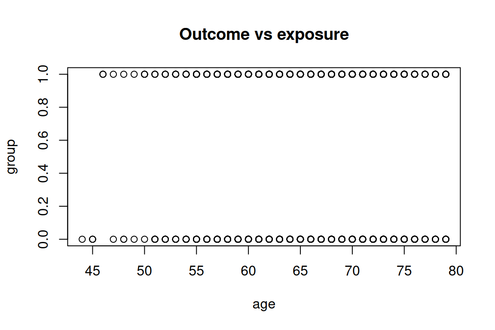
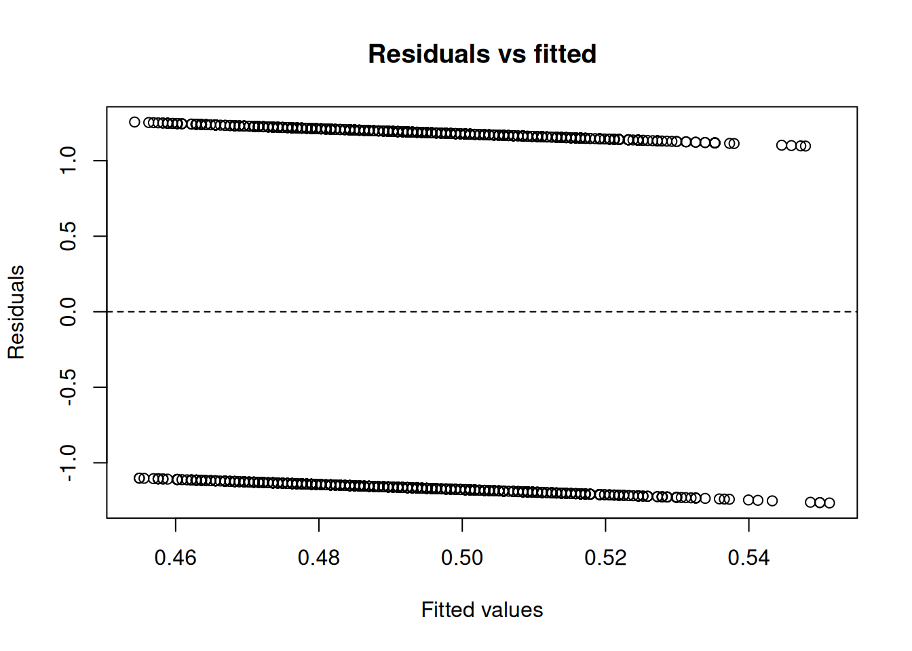

Code
data(rmb_datasets, package = "rmb")
rmb_datasets$study_design[rmb_datasets$object == "hers_nodm_visit4_only"]
#> [1] "Cross-sectional Visit 4 subset of HERS participants without diabetes."This vignette implements an expanded, dataset-organized RMB2e analysis workflow for hers_nodm_visit4_only.
data(rmb_datasets, package = "rmb")
rmb_datasets$study_design[rmb_datasets$object == "hers_nodm_visit4_only"]
#> [1] "Cross-sectional Visit 4 subset of HERS participants without diabetes."data(hers_nodm_visit4_only, package = "rmb")
dat <- hers_nodm_visit4_only
dim(dat)
#> [1] 1871 31
head(dat)
#> age group grade_hi visit exer3 avgdrpwk csmker weight bmi sbp glucose
#> 1 57 1 12 Year 4 0 0.0000000 0 74.4 26.90 112 85
#> 2 58 1 12 Year 4 0 0.0000000 0 65.9 26.84 104 95
#> 3 77 1 12 Year 4 0 0.0000000 1 50.7 23.37 137 94
#> 4 57 1 13 Year 4 NA NA NA NA NA NA NA
#> 5 77 0 15 Year 4 0 0.0000000 0 59.3 29.08 148 115
#> 6 59 1 20 Year 4 1 0.2333333 0 76.3 29.22 130 112
#> pptid htnmeds white drinkany diabetes nvisit miss_gluc bmi_cat gluc_miscat
#> 1 681 1 1 0 0 4 0 3 1
#> 2 549 1 0 0 0 4 0 3 2
#> 3 1888 1 1 0 0 4 0 1 2
#> 4 1368 1 1 NA 0 4 1 NA 0
#> 5 1933 0 1 0 0 4 0 3 3
#> 6 1611 1 1 1 0 4 0 3 3
#> _mi_miss _1_glucose _2_glucose _3_glucose _4_glucose _5_glucose _6_glucose
#> 1 0 85 85 85 85 85 85
#> 2 0 95 95 95 95 95 95
#> 3 0 94 94 94 94 94 94
#> 4 1 NA NA NA NA NA NA
#> 5 0 115 115 115 115 115 115
#> 6 0 112 112 112 112 112 112
#> _7_glucose _8_glucose _9_glucose _10_glucose
#> 1 85 85 85 85
#> 2 95 95 95 95
#> 3 94 94 94 94
#> 4 NA NA NA NA
#> 5 115 115 115 115
#> 6 112 112 112 112
summary(dat)
#> age group grade_hi visit
#> Min. :44.00 Min. :0.0000 Min. : 2.00 Length:1871
#> 1st Qu.:61.00 1st Qu.:0.0000 1st Qu.:12.00 Class :character
#> Median :66.00 Median :0.0000 Median :12.00 Mode :character
#> Mean :65.93 Mean :0.4933 Mean :12.76
#> 3rd Qu.:71.00 3rd Qu.:1.0000 3rd Qu.:14.00
#> Max. :79.00 Max. :1.0000 Max. :20.00
#> NA's :1
#> exer3 avgdrpwk csmker weight
#> Min. :0.0000 Min. : 0.0000 Min. :0.0000 Min. : 37.10
#> 1st Qu.:0.0000 1st Qu.: 0.0000 1st Qu.:0.0000 1st Qu.: 62.00
#> Median :0.0000 Median : 0.0000 Median :0.0000 Median : 70.50
#> Mean :0.3206 Mean : 1.3541 Mean :0.1322 Mean : 72.51
#> 3rd Qu.:1.0000 3rd Qu.: 0.5833 3rd Qu.:0.0000 3rd Qu.: 80.90
#> Max. :1.0000 Max. :28.0000 Max. :1.0000 Max. :136.00
#> NA's :62 NA's :63 NA's :63 NA's :102
#> bmi sbp glucose pptid
#> Min. :16.04 Min. : 82.0 Min. : 4.0 Min. : 3.0
#> 1st Qu.:24.82 1st Qu.:122.0 1st Qu.: 91.0 1st Qu.: 695.5
#> Median :27.94 Median :135.0 Median :100.0 Median :1373.0
#> Mean :28.67 Mean :136.1 Mean :113.6 Mean :1376.0
#> 3rd Qu.:31.68 3rd Qu.:148.0 3rd Qu.:115.0 3rd Qu.:2054.0
#> Max. :55.33 Max. :231.0 Max. :478.0 Max. :2763.0
#> NA's :110 NA's :85 NA's :443
#> htnmeds white drinkany diabetes nvisit
#> Min. :0.000 Min. :0.0000 Min. :0.0000 Min. :0.0000 Min. :4
#> 1st Qu.:1.000 1st Qu.:1.0000 1st Qu.:0.0000 1st Qu.:0.0000 1st Qu.:4
#> Median :1.000 Median :1.0000 Median :0.0000 Median :0.0000 Median :4
#> Mean :0.853 Mean :0.8961 Mean :0.3938 Mean :0.2517 Mean :4
#> 3rd Qu.:1.000 3rd Qu.:1.0000 3rd Qu.:1.0000 3rd Qu.:1.0000 3rd Qu.:4
#> Max. :1.000 Max. :1.0000 Max. :1.0000 Max. :1.0000 Max. :4
#> NA's :3 NA's :63
#> miss_gluc bmi_cat gluc_miscat _mi_miss
#> Min. :0.0000 Min. :1.000 Min. :0.000 Min. :0.0000
#> 1st Qu.:0.0000 1st Qu.:2.000 1st Qu.:1.000 1st Qu.:0.0000
#> Median :0.0000 Median :3.000 Median :2.000 Median :0.0000
#> Mean :0.2368 Mean :2.997 Mean :1.889 Mean :0.2368
#> 3rd Qu.:0.0000 3rd Qu.:4.000 3rd Qu.:3.000 3rd Qu.:0.0000
#> Max. :1.0000 Max. :5.000 Max. :4.000 Max. :1.0000
#> NA's :110
#> _1_glucose _2_glucose _3_glucose _4_glucose
#> Min. : 0.2245 Min. :-16.36 Min. : 4.0 Min. : 2.703
#> 1st Qu.: 91.0000 1st Qu.: 90.50 1st Qu.: 90.0 1st Qu.: 91.000
#> Median :101.0000 Median :101.00 Median :101.0 Median :101.000
#> Mean :113.0831 Mean :113.29 Mean :113.3 Mean :113.197
#> 3rd Qu.:122.0000 3rd Qu.:123.00 3rd Qu.:123.0 3rd Qu.:122.000
#> Max. :478.0000 Max. :478.00 Max. :478.0 Max. :478.000
#> NA's :78 NA's :78 NA's :78 NA's :78
#> _5_glucose _6_glucose _7_glucose _8_glucose
#> Min. : -5.654 Min. :-36.47 Min. : 0.5908 Min. : -7.561
#> 1st Qu.: 91.000 1st Qu.: 90.00 1st Qu.: 90.0000 1st Qu.: 90.000
#> Median :101.000 Median :101.00 Median :101.0000 Median :101.000
#> Mean :113.735 Mean :113.16 Mean :113.7342 Mean :113.015
#> 3rd Qu.:123.000 3rd Qu.:123.92 3rd Qu.:123.0000 3rd Qu.:122.000
#> Max. :478.000 Max. :478.00 Max. :478.0000 Max. :478.000
#> NA's :78 NA's :78 NA's :78 NA's :78
#> _9_glucose _10_glucose
#> Min. :-50.08 Min. :-39.65
#> 1st Qu.: 90.00 1st Qu.: 90.12
#> Median :101.00 Median :101.00
#> Mean :112.44 Mean :113.35
#> 3rd Qu.:122.00 3rd Qu.:122.00
#> Max. :478.00 Max. :478.00
#> NA's :78 NA's :78var_labels <- vapply(dat, function(x) {
lbl <- attr(x, "label")
if (is.null(lbl) || length(lbl) == 0 || all(lbl == "")) NA_character_ else paste(as.character(lbl), collapse = "; ")
}, character(1))
stats::setNames(var_labels, names(dat))
#> age
#> "age"
#> group
#> "treatment assignment 0:a: pbo, 1:b:hrt"
#> grade_hi
#> "highest grade completed"
#> visit
#> "visit"
#> exer3
#> "bl exercise &/or walk >3x/wk, 1:y 0:n"
#> avgdrpwk
#> "avg drinks per week"
#> csmker
#> "current smoking status 1:current"
#> weight
#> "weight"
#> bmi
#> "body mass index"
#> sbp
#> "average systolic blood pressure"
#> glucose
#> "glucose"
#> pptid
#> "subject id"
#> htnmeds
#> "anti-htn meds use"
#> white
#> "(1=white, 0=other)"
#> drinkany
#> "(1 if avgdrpwk>0, 0 otherwise)"
#> diabetes
#> "(1=yes, 0=no)"
#> nvisit
#> "Visit number (0=baseline)"
#> miss_gluc
#> "Variable description not provided in source metadata."
#> bmi_cat
#> "5 quantiles of bmi"
#> gluc_miscat
#> "Variable description not provided in source metadata."
#> _mi_miss
#> "Variable description not provided in source metadata."
#> _1_glucose
#> "glucose"
#> _2_glucose
#> "glucose"
#> _3_glucose
#> "glucose"
#> _4_glucose
#> "glucose"
#> _5_glucose
#> "glucose"
#> _6_glucose
#> "glucose"
#> _7_glucose
#> "glucose"
#> _8_glucose
#> "glucose"
#> _9_glucose
#> "glucose"
#> _10_glucose
#> "glucose"For hers_nodm_visit4_only we ask: what is the association between a primary exposure and an outcome, after accounting for a plausible confounder?
is_binary <- function(x) {
x <- stats::na.omit(x)
if (length(x) == 0) {
return(FALSE)
}
if (is.logical(x)) {
return(TRUE)
}
ux <- unique(x)
if (length(ux) > 2) {
return(FALSE)
}
if (is.factor(x)) {
return(TRUE)
}
is.numeric(x) && all(ux %in% c(0, 1))
}
is_count <- function(x) {
if (!is.numeric(x)) {
return(FALSE)
}
x <- stats::na.omit(x)
if (length(x) == 0) {
return(FALSE)
}
all(x >= 0 & abs(x - round(x)) < 1e-8) && length(unique(x)) > 2
}
candidate_vars <- names(dat)[vapply(dat, function(x) {
is.numeric(x) || is.factor(x) || is.logical(x)
}, logical(1))]
continuous_vars <- candidate_vars[vapply(dat[candidate_vars], function(x) {
is.numeric(x) && length(unique(stats::na.omit(x))) > 10
}, logical(1))]
binary_vars <- candidate_vars[vapply(dat[candidate_vars], is_binary, logical(1))]
count_vars <- candidate_vars[vapply(dat[candidate_vars], is_count, logical(1))]
outcome_var <- if (length(binary_vars) > 0) {
binary_vars[1]
} else if (length(continuous_vars) > 0) {
continuous_vars[1]
} else if (length(count_vars) > 0) {
count_vars[1]
} else if (length(candidate_vars) > 0) {
candidate_vars[1]
} else {
NA_character_
}
remaining_vars <- setdiff(candidate_vars, outcome_var)
exposure_var <- if (length(remaining_vars) > 0) remaining_vars[1] else NA_character_
confounder_var <- if (length(remaining_vars) > 1) remaining_vars[2] else NA_character_
model_family <- if (!is.na(outcome_var) && outcome_var %in% binary_vars) {
"binomial"
} else if (!is.na(outcome_var) && outcome_var %in% count_vars) {
"poisson"
} else {
"gaussian"
}
can_fit_model <- !is.na(outcome_var) && !is.na(exposure_var)
c(
outcome = outcome_var,
exposure = exposure_var,
confounder = confounder_var,
family = model_family,
can_fit_model = can_fit_model
)
#> outcome exposure confounder family can_fit_model
#> "group" "age" "grade_hi" "binomial" "TRUE"We use group as the outcome and age as the primary exposure, with grade_hi as a candidate confounder.
if (!is.na(exposure_var) && !is.na(confounder_var)) {
cat(
"```{mermaid}
",
"flowchart LR
",
" C[", confounder_var, "] --> E[", exposure_var, "]
",
" C --> Y[", outcome_var, "]
",
" E --> Y
",
"```
",
sep = ""
)
} else if (!is.na(exposure_var)) {
cat(
"```{mermaid}
",
"flowchart LR
",
" E[", exposure_var, "] --> Y[", outcome_var, "]
",
"```
",
sep = ""
)
} else {
cat("Not enough variables to draw a DAG for this dataset.\n")
}We start by checking the analysis sample and the marginal distributions of the selected variables.
analysis_vars <- unique(stats::na.omit(c(outcome_var, exposure_var, confounder_var)))
if (length(analysis_vars) == 0) {
analysis_df <- data.frame()
c(n_total = nrow(dat), n_complete = 0, p_complete = 0)
cat("No numeric, logical, or factor variables available for analysis.\n")
} else {
analysis_df <- dat[, analysis_vars, drop = FALSE]
analysis_df <- stats::na.omit(analysis_df)
c(
n_total = nrow(dat),
n_complete = nrow(analysis_df),
p_complete = nrow(analysis_df) / nrow(dat)
)
summary(analysis_df)
}
#> group age grade_hi
#> Min. :0.000 Min. :44.00 Min. : 2.00
#> 1st Qu.:0.000 1st Qu.:61.00 1st Qu.:12.00
#> Median :0.000 Median :66.00 Median :12.00
#> Mean :0.493 Mean :65.93 Mean :12.76
#> 3rd Qu.:1.000 3rd Qu.:71.00 3rd Qu.:14.00
#> Max. :1.000 Max. :79.00 Max. :20.00if (nrow(analysis_df) == 0 || is.na(exposure_var) || is.na(outcome_var)) {
plot.new()
text(0.5, 0.5, "No EDA plot: insufficient variables or complete cases")
} else if (is.numeric(analysis_df[[outcome_var]]) &&
is.numeric(analysis_df[[exposure_var]])) {
plot(
analysis_df[[exposure_var]],
analysis_df[[outcome_var]],
xlab = exposure_var,
ylab = outcome_var,
main = "Outcome vs exposure"
)
} else if (is.numeric(analysis_df[[outcome_var]])) {
boxplot(
analysis_df[[outcome_var]] ~ as.factor(analysis_df[[exposure_var]]),
xlab = exposure_var,
ylab = outcome_var,
main = "Outcome by exposure"
)
} else {
plot.new()
text(0.5, 0.5, "No simple EDA plot available for selected variables")
}
Following the GLM model-fitting process, we specify an unadjusted model and a model adjusted for the candidate confounder.
if (can_fit_model && nrow(analysis_df) > 0) {
if (inherits(analysis_df[[outcome_var]], "haven_labelled")) {
analysis_df[[outcome_var]] <- as.numeric(analysis_df[[outcome_var]])
}
if (inherits(analysis_df[[exposure_var]], "haven_labelled")) {
analysis_df[[exposure_var]] <- as.numeric(analysis_df[[exposure_var]])
}
if (!is.na(confounder_var) &&
inherits(analysis_df[[confounder_var]], "haven_labelled")) {
analysis_df[[confounder_var]] <- as.numeric(analysis_df[[confounder_var]])
}
if (is.logical(analysis_df[[outcome_var]])) {
analysis_df[[outcome_var]] <- as.integer(analysis_df[[outcome_var]])
}
if (is.logical(analysis_df[[exposure_var]])) {
analysis_df[[exposure_var]] <- as.integer(analysis_df[[exposure_var]])
}
if (!is.na(confounder_var) && is.logical(analysis_df[[confounder_var]])) {
analysis_df[[confounder_var]] <- as.integer(analysis_df[[confounder_var]])
}
if (model_family == "binomial") {
outcome_values <- sort(unique(stats::na.omit(analysis_df[[outcome_var]])))
if (length(outcome_values) == 2) {
analysis_df[[outcome_var]] <- as.integer(
analysis_df[[outcome_var]] == outcome_values[2]
)
}
}
formula_unadjusted <- stats::as.formula(paste(outcome_var, "~", exposure_var))
formula_adjusted <- if (!is.na(confounder_var)) {
stats::as.formula(paste(outcome_var, "~", exposure_var, "+", confounder_var))
} else {
formula_unadjusted
}
list(
family = model_family,
unadjusted = formula_unadjusted,
adjusted = formula_adjusted
)
} else {
formula_unadjusted <- NULL
formula_adjusted <- NULL
cat("Model specification skipped: insufficient variables or complete cases.\n")
}
#> $family
#> [1] "binomial"
#>
#> $unadjusted
#> group ~ age
#>
#> $adjusted
#> group ~ age + grade_hifit_unadjusted <- NULL
fit_adjusted <- NULL
if (!is.null(formula_unadjusted) && nrow(analysis_df) >= 20) {
fit_function <- if (model_family == "gaussian") stats::lm else stats::glm
fit_args <- if (model_family == "gaussian") {
list(data = analysis_df)
} else {
list(data = analysis_df, family = model_family)
}
fit_unadjusted <- tryCatch(
do.call(fit_function, c(list(formula = formula_unadjusted), fit_args)),
error = identity
)
fit_adjusted <- tryCatch(
do.call(fit_function, c(list(formula = formula_adjusted), fit_args)),
error = identity
)
if (inherits(fit_unadjusted, "error") || inherits(fit_adjusted, "error")) {
cat("Model fitting did not converge for this variable set.\n")
} else {
summary(fit_unadjusted)
summary(fit_adjusted)
}
} else {
cat("Parameter estimation skipped: fewer than 20 complete observations.\n")
}
#>
#> Call:
#> (function (formula, family = gaussian, data, weights, subset,
#> na.action, start = NULL, etastart, mustart, offset, control = list(...),
#> model = TRUE, method = "glm.fit", x = FALSE, y = TRUE, singular.ok = TRUE,
#> contrasts = NULL, ...)
#> {
#> cal <- match.call()
#> if (is.character(family))
#> family <- get(family, mode = "function", envir = parent.frame())
#> if (is.function(family))
#> family <- family()
#> if (is.null(family$family)) {
#> print(family)
#> stop("'family' not recognized")
#> }
#> if (missing(data))
#> data <- environment(formula)
#> mf <- match.call(expand.dots = FALSE)
#> m <- match(c("formula", "data", "subset", "weights", "na.action",
#> "etastart", "mustart", "offset"), names(mf), 0L)
#> mf <- mf[c(1L, m)]
#> mf$drop.unused.levels <- TRUE
#> mf[[1L]] <- quote(stats::model.frame)
#> mf <- eval(mf, parent.frame())
#> if (identical(method, "model.frame"))
#> return(mf)
#> if (!is.character(method) && !is.function(method))
#> stop("invalid 'method' argument")
#> if (identical(method, "glm.fit"))
#> control <- do.call("glm.control", control)
#> mt <- attr(mf, "terms")
#> Y <- model.response(mf, "any")
#> if (length(dim(Y)) == 1L) {
#> nm <- rownames(Y)
#> dim(Y) <- NULL
#> if (!is.null(nm))
#> names(Y) <- nm
#> }
#> X <- if (!is.empty.model(mt))
#> model.matrix(mt, mf, contrasts)
#> else matrix(, NROW(Y), 0L)
#> weights <- as.vector(model.weights(mf))
#> if (!is.null(weights) && !is.numeric(weights))
#> stop("'weights' must be a numeric vector")
#> if (!is.null(weights) && any(weights < 0))
#> stop("negative weights not allowed")
#> offset <- as.vector(model.offset(mf))
#> if (!is.null(offset)) {
#> if (length(offset) != NROW(Y))
#> stop(gettextf("number of offsets is %d should equal %d (number of observations)",
#> length(offset), NROW(Y)), domain = NA)
#> }
#> mustart <- model.extract(mf, "mustart")
#> etastart <- model.extract(mf, "etastart")
#> fit <- eval(call(if (is.function(method)) "method" else method,
#> x = X, y = Y, weights = weights, start = start, etastart = etastart,
#> mustart = mustart, offset = offset, family = family,
#> control = control, intercept = attr(mt, "intercept") >
#> 0L, singular.ok = singular.ok))
#> if (length(offset) && attr(mt, "intercept") > 0L) {
#> fit2 <- eval(call(if (is.function(method)) "method" else method,
#> x = X[, "(Intercept)", drop = FALSE], y = Y, mustart = fit$fitted.values,
#> weights = weights, offset = offset, family = family,
#> control = control, intercept = TRUE))
#> if (!fit2$converged)
#> warning("fitting to calculate the null deviance did not converge -- increase 'maxit'?")
#> fit$null.deviance <- fit2$deviance
#> }
#> if (model)
#> fit$model <- mf
#> fit$na.action <- attr(mf, "na.action")
#> if (x)
#> fit$x <- X
#> if (!y)
#> fit$y <- NULL
#> structure(c(fit, list(call = cal, formula = formula, terms = mt,
#> data = data, offset = offset, control = control, method = method,
#> contrasts = attr(X, "contrasts"), xlevels = .getXlevels(mt,
#> mf))), class = c(fit$class, c("glm", "lm")))
#> })(formula = group ~ age + grade_hi, family = "binomial", data = structure(list(
#> group = c(1L, 1L, 1L, 1L, 0L, 1L, 0L, 1L, 1L, 0L, 0L, 0L,
#> 0L, 0L, 0L, 0L, 1L, 0L, 0L, 0L, 1L, 0L, 1L, 0L, 1L, 0L, 1L,
#> 1L, 0L, 0L, 0L, 1L, 0L, 0L, 0L, 0L, 1L, 1L, 1L, 0L, 1L, 1L,
#> 0L, 0L, 0L, 0L, 1L, 1L, 1L, 0L, 0L, 0L, 1L, 1L, 1L, 1L, 1L,
#> 1L, 1L, 0L, 1L, 1L, 0L, 1L, 0L, 1L, 0L, 0L, 1L, 1L, 1L, 1L,
#> 0L, 0L, 1L, 0L, 0L, 1L, 1L, 1L, 0L, 0L, 0L, 1L, 0L, 1L, 0L,
#> 0L, 0L, 1L, 1L, 1L, 0L, 0L, 0L, 1L, 0L, 1L, 1L, 1L, 0L, 0L,
#> 0L, 0L, 1L, 0L, 0L, 0L, 0L, 1L, 1L, 1L, 0L, 1L, 0L, 0L, 0L,
#> 0L, 1L, 0L, 1L, 0L, 0L, 0L, 1L, 1L, 0L, 0L, 1L, 1L, 1L, 0L,
#> 1L, 1L, 0L, 0L, 1L, 0L, 0L, 1L, 1L, 1L, 0L, 0L, 0L, 0L, 0L,
#> 1L, 0L, 0L, 0L, 1L, 1L, 0L, 0L, 1L, 0L, 1L, 0L, 1L, 0L, 0L,
#> 1L, 0L, 0L, 1L, 0L, 1L, 0L, 0L, 1L, 1L, 0L, 1L, 0L, 0L, 0L,
#> 0L, 1L, 0L, 1L, 1L, 0L, 1L, 0L, 0L, 0L, 1L, 1L, 0L, 0L, 1L,
#> 0L, 1L, 0L, 1L, 0L, 1L, 0L, 0L, 1L, 1L, 0L, 1L, 1L, 0L, 1L,
#> 1L, 1L, 1L, 1L, 1L, 0L, 0L, 0L, 1L, 1L, 0L, 1L, 1L, 1L, 0L,
#> 1L, 1L, 1L, 1L, 0L, 0L, 0L, 0L, 0L, 0L, 0L, 1L, 1L, 0L, 1L,
#> 1L, 0L, 1L, 0L, 1L, 1L, 1L, 0L, 0L, 1L, 0L, 1L, 0L, 1L, 1L,
#> 1L, 0L, 1L, 1L, 0L, 0L, 1L, 0L, 1L, 1L, 1L, 0L, 0L, 0L, 0L,
#> 0L, 0L, 1L, 0L, 1L, 0L, 1L, 1L, 1L, 1L, 1L, 0L, 0L, 0L, 0L,
#> 1L, 1L, 1L, 1L, 1L, 1L, 1L, 1L, 1L, 1L, 1L, 0L, 1L, 0L, 0L,
#> 1L, 0L, 1L, 0L, 1L, 1L, 1L, 0L, 0L, 0L, 1L, 0L, 0L, 0L, 1L,
#> 0L, 1L, 1L, 0L, 0L, 0L, 0L, 0L, 1L, 0L, 1L, 1L, 0L, 1L, 0L,
#> 1L, 1L, 1L, 1L, 0L, 0L, 0L, 1L, 1L, 0L, 0L, 0L, 1L, 1L, 1L,
#> 1L, 0L, 0L, 1L, 0L, 1L, 0L, 1L, 0L, 1L, 1L, 1L, 0L, 0L, 0L,
#> 1L, 0L, 0L, 1L, 0L, 1L, 0L, 0L, 0L, 1L, 0L, 0L, 1L, 0L, 1L,
#> 1L, 0L, 0L, 0L, 0L, 1L, 0L, 1L, 0L, 0L, 1L, 1L, 1L, 0L, 0L,
#> 0L, 0L, 0L, 0L, 0L, 0L, 1L, 1L, 1L, 0L, 0L, 0L, 1L, 0L, 1L,
#> 0L, 1L, 0L, 1L, 1L, 1L, 0L, 0L, 0L, 0L, 1L, 0L, 1L, 1L, 1L,
#> 1L, 0L, 0L, 0L, 1L, 1L, 0L, 0L, 1L, 0L, 1L, 1L, 0L, 0L, 0L,
#> 0L, 0L, 1L, 1L, 0L, 1L, 0L, 1L, 0L, 1L, 0L, 0L, 1L, 0L, 1L,
#> 0L, 0L, 1L, 1L, 1L, 0L, 1L, 0L, 0L, 1L, 0L, 0L, 1L, 1L, 1L,
#> 0L, 1L, 0L, 0L, 0L, 1L, 0L, 0L, 1L, 1L, 0L, 0L, 1L, 0L, 1L,
#> 0L, 1L, 1L, 1L, 1L, 0L, 0L, 1L, 1L, 1L, 1L, 0L, 1L, 0L, 0L,
#> 0L, 1L, 1L, 0L, 0L, 1L, 1L, 0L, 0L, 1L, 0L, 0L, 0L, 1L, 1L,
#> 1L, 0L, 0L, 0L, 1L, 1L, 0L, 0L, 0L, 1L, 1L, 1L, 1L, 0L, 0L,
#> 1L, 1L, 1L, 0L, 1L, 0L, 0L, 1L, 0L, 1L, 0L, 1L, 0L, 1L, 0L,
#> 1L, 0L, 0L, 1L, 0L, 0L, 0L, 0L, 0L, 0L, 0L, 1L, 1L, 1L, 0L,
#> 1L, 0L, 1L, 1L, 1L, 1L, 1L, 1L, 0L, 0L, 0L, 1L, 1L, 1L, 1L,
#> 0L, 0L, 1L, 1L, 1L, 1L, 1L, 0L, 1L, 1L, 1L, 0L, 1L, 1L, 0L,
#> 1L, 1L, 0L, 1L, 1L, 0L, 1L, 1L, 0L, 0L, 0L, 0L, 0L, 1L, 1L,
#> 0L, 0L, 0L, 0L, 0L, 1L, 0L, 0L, 1L, 0L, 1L, 1L, 1L, 0L, 0L,
#> 1L, 1L, 1L, 0L, 1L, 0L, 1L, 0L, 0L, 1L, 1L, 1L, 1L, 1L, 0L,
#> 0L, 1L, 1L, 1L, 1L, 1L, 1L, 0L, 1L, 1L, 1L, 0L, 0L, 0L, 0L,
#> 0L, 0L, 1L, 1L, 0L, 0L, 0L, 1L, 0L, 0L, 1L, 1L, 1L, 0L, 1L,
#> 0L, 1L, 1L, 1L, 1L, 0L, 0L, 1L, 0L, 0L, 1L, 1L, 0L, 0L, 0L,
#> 0L, 0L, 0L, 0L, 1L, 0L, 0L, 0L, 0L, 0L, 1L, 1L, 1L, 1L, 0L,
#> 1L, 0L, 1L, 0L, 0L, 1L, 0L, 0L, 0L, 1L, 1L, 1L, 0L, 0L, 1L,
#> 0L, 0L, 0L, 0L, 0L, 0L, 0L, 0L, 0L, 1L, 0L, 1L, 1L, 1L, 0L,
#> 0L, 0L, 0L, 0L, 1L, 1L, 1L, 0L, 1L, 0L, 1L, 1L, 1L, 0L, 1L,
#> 1L, 0L, 0L, 0L, 1L, 1L, 0L, 1L, 1L, 0L, 1L, 1L, 0L, 0L, 1L,
#> 1L, 1L, 1L, 0L, 1L, 0L, 0L, 1L, 0L, 1L, 0L, 1L, 0L, 0L, 1L,
#> 0L, 1L, 0L, 0L, 1L, 0L, 1L, 0L, 1L, 0L, 0L, 1L, 1L, 1L, 0L,
#> 1L, 0L, 0L, 1L, 0L, 0L, 1L, 1L, 1L, 0L, 0L, 0L, 0L, 1L, 0L,
#> 1L, 0L, 0L, 0L, 1L, 0L, 1L, 0L, 0L, 1L, 0L, 0L, 1L, 0L, 0L,
#> 0L, 1L, 0L, 1L, 0L, 1L, 0L, 0L, 0L, 0L, 1L, 1L, 0L, 1L, 0L,
#> 1L, 1L, 1L, 1L, 1L, 0L, 0L, 1L, 0L, 1L, 0L, 1L, 0L, 1L, 1L,
#> 0L, 1L, 0L, 1L, 1L, 0L, 0L, 1L, 0L, 1L, 0L, 0L, 0L, 0L, 0L,
#> 1L, 1L, 1L, 0L, 1L, 1L, 1L, 0L, 1L, 0L, 0L, 0L, 1L, 0L, 0L,
#> 0L, 1L, 1L, 0L, 0L, 1L, 1L, 1L, 1L, 0L, 0L, 1L, 0L, 0L, 0L,
#> 0L, 0L, 1L, 0L, 1L, 0L, 1L, 0L, 0L, 1L, 0L, 0L, 1L, 0L, 0L,
#> 1L, 0L, 1L, 1L, 0L, 0L, 1L, 0L, 0L, 0L, 1L, 0L, 1L, 1L, 1L,
#> 0L, 0L, 1L, 1L, 1L, 0L, 1L, 0L, 1L, 0L, 0L, 1L, 1L, 0L, 0L,
#> 0L, 1L, 0L, 0L, 1L, 0L, 1L, 1L, 1L, 0L, 1L, 1L, 0L, 1L, 1L,
#> 0L, 1L, 1L, 0L, 0L, 0L, 0L, 1L, 1L, 0L, 0L, 1L, 1L, 1L, 0L,
#> 1L, 1L, 0L, 1L, 0L, 0L, 0L, 1L, 0L, 0L, 0L, 1L, 1L, 0L, 0L,
#> 1L, 0L, 0L, 1L, 1L, 1L, 0L, 0L, 0L, 1L, 1L, 0L, 0L, 0L, 1L,
#> 0L, 0L, 0L, 1L, 0L, 1L, 0L, 0L, 0L, 1L, 1L, 1L, 0L, 1L, 0L,
#> 0L, 0L, 0L, 1L, 1L, 1L, 0L, 0L, 0L, 0L, 0L, 1L, 0L, 1L, 0L,
#> 0L, 0L, 0L, 0L, 0L, 0L, 1L, 0L, 0L, 0L, 0L, 0L, 0L, 0L, 0L,
#> 0L, 1L, 1L, 1L, 1L, 0L, 1L, 0L, 1L, 1L, 1L, 1L, 0L, 1L, 1L,
#> 0L, 0L, 1L, 0L, 0L, 1L, 0L, 1L, 1L, 0L, 0L, 1L, 0L, 0L, 1L,
#> 1L, 1L, 0L, 1L, 0L, 1L, 1L, 1L, 0L, 0L, 0L, 0L, 0L, 1L, 1L,
#> 0L, 1L, 0L, 1L, 1L, 0L, 1L, 0L, 1L, 1L, 1L, 0L, 1L, 1L, 0L,
#> 0L, 0L, 0L, 0L, 0L, 1L, 0L, 1L, 0L, 1L, 0L, 0L, 1L, 0L, 1L,
#> 1L, 0L, 0L, 1L, 0L, 1L, 1L, 1L, 0L, 0L, 1L, 1L, 0L, 0L, 1L,
#> 0L, 1L, 0L, 1L, 0L, 1L, 0L, 0L, 1L, 1L, 1L, 1L, 1L, 1L, 0L,
#> 0L, 1L, 1L, 1L, 1L, 1L, 1L, 1L, 1L, 0L, 1L, 0L, 0L, 0L, 1L,
#> 1L, 1L, 1L, 0L, 1L, 0L, 1L, 0L, 0L, 0L, 1L, 0L, 0L, 1L, 1L,
#> 0L, 0L, 1L, 0L, 0L, 1L, 1L, 0L, 0L, 0L, 0L, 0L, 1L, 1L, 1L,
#> 1L, 1L, 0L, 0L, 1L, 1L, 0L, 0L, 0L, 1L, 0L, 1L, 0L, 1L, 1L,
#> 1L, 0L, 1L, 0L, 1L, 0L, 0L, 0L, 1L, 0L, 0L, 0L, 0L, 1L, 0L,
#> 1L, 0L, 0L, 1L, 0L, 0L, 0L, 1L, 0L, 1L, 0L, 1L, 1L, 0L, 0L,
#> 1L, 0L, 0L, 1L, 1L, 0L, 1L, 1L, 1L, 1L, 1L, 1L, 1L, 1L, 0L,
#> 1L, 0L, 1L, 0L, 0L, 1L, 0L, 0L, 0L, 1L, 0L, 0L, 0L, 0L, 1L,
#> 1L, 0L, 0L, 1L, 0L, 0L, 0L, 1L, 1L, 1L, 0L, 0L, 1L, 0L, 0L,
#> 0L, 1L, 1L, 0L, 0L, 1L, 1L, 0L, 0L, 0L, 0L, 0L, 0L, 0L, 0L,
#> 0L, 1L, 0L, 1L, 1L, 1L, 1L, 0L, 0L, 1L, 0L, 1L, 1L, 1L, 1L,
#> 0L, 1L, 0L, 0L, 0L, 0L, 0L, 1L, 0L, 1L, 1L, 1L, 0L, 1L, 0L,
#> 1L, 1L, 0L, 0L, 1L, 0L, 0L, 0L, 0L, 1L, 0L, 1L, 1L, 0L, 1L,
#> 0L, 0L, 1L, 1L, 0L, 0L, 0L, 0L, 0L, 1L, 0L, 0L, 1L, 0L, 1L,
#> 1L, 1L, 1L, 1L, 0L, 1L, 0L, 1L, 0L, 0L, 1L, 1L, 1L, 1L, 1L,
#> 1L, 1L, 0L, 1L, 0L, 1L, 1L, 1L, 0L, 0L, 0L, 1L, 0L, 0L, 0L,
#> 1L, 1L, 1L, 0L, 0L, 0L, 0L, 1L, 0L, 0L, 0L, 1L, 0L, 1L, 1L,
#> 0L, 0L, 1L, 1L, 1L, 1L, 0L, 1L, 1L, 0L, 0L, 1L, 1L, 1L, 1L,
#> 1L, 1L, 1L, 0L, 0L, 1L, 1L, 0L, 0L, 0L, 0L, 0L, 0L, 0L, 0L,
#> 0L, 0L, 0L, 1L, 1L, 0L, 1L, 1L, 0L, 0L, 0L, 1L, 1L, 0L, 1L,
#> 1L, 0L, 1L, 1L, 1L, 0L, 1L, 1L, 1L, 0L, 1L, 1L, 0L, 0L, 0L,
#> 0L, 1L, 0L, 1L, 1L, 1L, 1L, 0L, 0L, 0L, 0L, 1L, 1L, 1L, 0L,
#> 0L, 1L, 0L, 1L, 0L, 1L, 0L, 0L, 1L, 1L, 1L, 1L, 1L, 1L, 0L,
#> 0L, 0L, 0L, 0L, 1L, 1L, 1L, 1L, 0L, 1L, 0L, 0L, 0L, 1L, 0L,
#> 1L, 1L, 0L, 1L, 1L, 0L, 0L, 1L, 0L, 0L, 1L, 1L, 0L, 0L, 1L,
#> 0L, 1L, 0L, 1L, 0L, 1L, 1L, 1L, 1L, 1L, 1L, 1L, 1L, 1L, 1L,
#> 0L, 0L, 1L, 1L, 0L, 0L, 1L, 0L, 1L, 1L, 1L, 0L, 1L, 0L, 0L,
#> 0L, 1L, 0L, 0L, 0L, 0L, 1L, 1L, 1L, 0L, 1L, 1L, 0L, 0L, 1L,
#> 0L, 1L, 1L, 0L, 1L, 0L, 1L, 0L, 0L, 0L, 1L, 1L, 1L, 1L, 1L,
#> 0L, 1L, 1L, 1L, 0L, 0L, 0L, 0L, 0L, 1L, 0L, 1L, 0L, 1L, 0L,
#> 0L, 1L, 1L, 1L, 0L, 1L, 0L, 0L, 1L, 0L, 0L, 1L, 0L, 0L, 0L,
#> 0L, 1L, 1L, 0L, 1L, 1L, 1L, 0L, 1L, 1L, 1L, 1L, 1L, 0L, 1L,
#> 0L, 1L, 1L, 0L, 1L, 1L, 0L, 0L, 1L, 0L, 0L, 1L, 1L, 1L, 0L,
#> 0L, 1L, 0L, 0L, 0L, 0L, 1L, 1L, 0L, 1L, 0L, 1L, 1L, 0L, 0L,
#> 0L, 0L, 1L, 1L, 1L, 1L, 1L, 0L, 1L, 1L, 0L, 1L, 0L, 1L, 1L,
#> 0L, 1L, 0L, 1L, 1L, 1L, 1L, 1L, 0L, 1L, 0L, 1L, 1L, 1L, 0L,
#> 0L, 1L, 1L, 1L, 1L, 0L, 0L, 0L, 1L, 1L, 0L, 0L, 0L, 0L, 1L,
#> 1L, 0L, 1L, 0L, 1L, 1L, 1L, 0L, 1L, 0L, 1L, 1L, 0L, 1L, 0L,
#> 1L, 1L, 0L, 0L, 0L, 0L, 0L, 1L, 1L, 0L, 0L, 1L, 0L, 1L, 1L,
#> 0L, 1L, 0L, 1L, 1L, 1L, 1L, 1L, 1L, 1L, 0L, 1L, 1L, 1L, 1L,
#> 0L, 0L, 1L, 1L, 1L, 0L, 1L, 1L, 1L, 0L, 0L, 0L, 1L, 0L, 1L,
#> 0L, 1L, 0L, 1L, 1L, 0L, 1L, 0L, 1L, 0L, 0L, 1L, 1L, 1L, 0L,
#> 1L, 0L, 1L, 1L, 1L, 0L, 0L, 0L, 0L, 1L, 0L, 1L, 1L, 1L, 1L,
#> 0L, 1L, 0L, 1L, 0L, 1L, 0L, 0L, 1L, 1L, 1L, 0L, 0L, 1L, 0L,
#> 0L, 0L, 1L, 0L, 1L, 0L, 1L, 1L, 0L, 0L, 1L, 1L, 0L, 0L, 0L,
#> 1L, 1L, 0L, 0L, 1L, 0L, 1L, 1L, 1L, 0L, 1L, 0L, 1L, 1L, 1L,
#> 0L, 1L, 1L, 1L, 1L, 1L, 0L, 1L, 1L, 0L, 0L, 0L, 1L, 0L, 1L,
#> 1L, 0L, 0L, 1L, 0L, 0L, 1L, 1L, 1L, 1L, 0L, 0L, 0L, 0L, 0L,
#> 0L, 1L, 1L, 1L, 0L, 1L, 0L, 0L, 0L, 0L, 0L, 1L, 1L), age = c(57,
#> 58, 77, 57, 77, 59, 74, 63, 59, 68, 63, 79, 65, 69, 60, 78,
#> 59, 79, 59, 72, 74, 65, 69, 62, 66, 68, 70, 65, 75, 60, 66,
#> 63, 69, 67, 74, 67, 68, 68, 61, 72, 70, 69, 69, 56, 66, 68,
#> 73, 71, 62, 68, 63, 57, 52, 64, 65, 77, 56, 71, 58, 73, 55,
#> 56, 56, 69, 52, 69, 65, 62, 61, 64, 61, 78, 63, 56, 74, 62,
#> 68, 78, 68, 68, 75, 72, 69, 67, 66, 64, 49, 65, 58, 67, 67,
#> 63, 70, 70, 64, 57, 59, 72, 70, 57, 69, 70, 75, 62, 76, 65,
#> 60, 65, 66, 70, 65, 61, 71, 58, 62, 54, 66, 60, 65, 70, 71,
#> 68, 64, 64, 68, 51, 60, 58, 70, 67, 73, 58, 70, 63, 67, 62,
#> 64, 58, 74, 62, 63, 63, 76, 65, 71, 54, 69, 75, 73, 66, 70,
#> 76, 60, 66, 70, 66, 60, 65, 51, 74, 62, 73, 79, 70, 58, 74,
#> 60, 65, 69, 67, 54, 58, 65, 58, 60, 67, 59, 69, 52, 72, 59,
#> 64, 67, 70, 61, 62, 64, 64, 62, 72, 75, 65, 68, 67, 69, 57,
#> 66, 66, 74, 69, 61, 61, 61, 66, 63, 77, 76, 57, 78, 67, 79,
#> 69, 59, 68, 78, 74, 68, 61, 62, 69, 63, 71, 64, 73, 58, 73,
#> 74, 66, 71, 71, 59, 67, 69, 57, 72, 69, 63, 68, 61, 75, 65,
#> 65, 61, 66, 63, 58, 79, 64, 77, 63, 63, 72, 68, 70, 74, 79,
#> 64, 67, 78, 59, 70, 63, 67, 67, 72, 58, 56, 72, 64, 60, 72,
#> 61, 59, 73, 58, 60, 60, 61, 61, 72, 56, 74, 66, 54, 66, 75,
#> 73, 66, 74, 66, 79, 58, 66, 75, 67, 76, 66, 63, 76, 66, 74,
#> 66, 66, 69, 58, 72, 64, 68, 60, 66, 65, 69, 64, 56, 69, 64,
#> 72, 68, 78, 60, 69, 58, 67, 57, 60, 71, 75, 72, 70, 66, 54,
#> 68, 74, 62, 71, 67, 69, 76, 62, 48, 75, 54, 68, 63, 69, 70,
#> 70, 60, 70, 51, 74, 68, 61, 61, 73, 69, 66, 68, 59, 71, 60,
#> 60, 58, 60, 58, 57, 67, 72, 68, 56, 79, 70, 64, 69, 69, 72,
#> 69, 70, 68, 72, 59, 67, 57, 57, 66, 70, 61, 69, 68, 68, 68,
#> 64, 44, 63, 72, 64, 73, 61, 62, 62, 56, 69, 69, 63, 74, 65,
#> 69, 68, 65, 75, 61, 73, 63, 63, 70, 72, 73, 61, 72, 74, 64,
#> 65, 68, 70, 60, 56, 59, 70, 68, 57, 62, 76, 77, 77, 54, 66,
#> 65, 65, 71, 59, 60, 72, 70, 70, 65, 59, 61, 66, 59, 75, 58,
#> 65, 74, 60, 74, 63, 69, 71, 71, 61, 60, 59, 57, 62, 67, 70,
#> 77, 53, 63, 62, 72, 66, 78, 70, 61, 68, 65, 71, 73, 67, 71,
#> 60, 61, 66, 56, 62, 69, 72, 68, 46, 64, 57, 64, 63, 63, 75,
#> 72, 67, 74, 66, 57, 66, 45, 64, 76, 67, 71, 69, 77, 64, 66,
#> 52, 79, 75, 62, 56, 74, 71, 64, 75, 68, 55, 68, 67, 57, 58,
#> 58, 72, 53, 59, 67, 62, 70, 68, 68, 75, 65, 68, 59, 75, 50,
#> 58, 61, 65, 65, 70, 70, 69, 69, 56, 64, 75, 65, 69, 64, 67,
#> 78, 68, 56, 77, 73, 58, 53, 74, 54, 70, 67, 70, 75, 60, 46,
#> 61, 74, 70, 75, 56, 66, 67, 63, 55, 56, 79, 72, 69, 52, 59,
#> 67, 59, 68, 65, 62, 66, 60, 67, 70, 58, 70, 59, 71, 64, 60,
#> 51, 68, 67, 63, 66, 59, 61, 76, 69, 61, 74, 58, 65, 72, 65,
#> 59, 75, 72, 66, 72, 50, 54, 76, 49, 55, 72, 72, 69, 67, 59,
#> 73, 65, 65, 57, 64, 64, 69, 61, 65, 58, 60, 66, 71, 71, 55,
#> 63, 75, 68, 68, 59, 70, 67, 65, 70, 57, 53, 52, 62, 64, 74,
#> 53, 73, 68, 75, 47, 78, 66, 60, 62, 72, 68, 69, 72, 56, 72,
#> 55, 60, 61, 78, 69, 65, 70, 72, 62, 66, 56, 61, 70, 65, 72,
#> 75, 61, 67, 67, 64, 66, 78, 64, 76, 71, 53, 68, 70, 63, 62,
#> 51, 69, 75, 57, 57, 55, 68, 66, 72, 64, 56, 68, 69, 68, 55,
#> 79, 71, 74, 54, 71, 72, 64, 62, 64, 70, 70, 73, 79, 66, 74,
#> 64, 58, 64, 62, 60, 75, 55, 79, 73, 78, 59, 57, 68, 73, 55,
#> 62, 73, 68, 74, 66, 69, 65, 64, 56, 61, 68, 58, 75, 70, 56,
#> 62, 73, 62, 73, 67, 56, 71, 68, 73, 65, 54, 55, 73, 66, 72,
#> 57, 61, 63, 68, 65, 73, 70, 71, 51, 56, 67, 75, 65, 72, 55,
#> 70, 77, 67, 68, 61, 55, 61, 59, 71, 68, 69, 72, 71, 60, 70,
#> 59, 72, 70, 65, 69, 61, 68, 54, 68, 66, 68, 67, 53, 77, 62,
#> 69, 75, 62, 73, 64, 65, 77, 65, 78, 73, 75, 57, 68, 67, 59,
#> 69, 64, 60, 59, 63, 66, 57, 73, 64, 73, 79, 67, 58, 75, 57,
#> 59, 63, 66, 70, 65, 72, 62, 79, 65, 64, 73, 73, 61, 66, 72,
#> 68, 70, 64, 67, 70, 74, 75, 75, 54, 69, 69, 57, 65, 75, 65,
#> 71, 72, 73, 74, 67, 64, 77, 59, 60, 72, 79, 61, 79, 74, 56,
#> 45, 74, 65, 60, 68, 64, 59, 67, 74, 68, 64, 72, 63, 64, 65,
#> 61, 76, 70, 60, 68, 64, 78, 52, 70, 75, 71, 60, 71, 66, 55,
#> 70, 61, 79, 61, 76, 62, 72, 68, 61, 75, 70, 68, 62, 67, 66,
#> 62, 75, 57, 65, 58, 72, 56, 64, 57, 67, 62, 70, 70, 64, 71,
#> 73, 68, 73, 69, 72, 70, 66, 60, 70, 53, 72, 69, 76, 75, 63,
#> 59, 74, 67, 60, 68, 73, 60, 68, 76, 63, 67, 76, 66, 64, 65,
#> 69, 67, 73, 62, 65, 65, 73, 62, 66, 66, 59, 60, 65, 62, 51,
#> 61, 61, 66, 61, 77, 69, 76, 62, 56, 66, 62, 76, 70, 72, 50,
#> 63, 60, 71, 69, 73, 74, 52, 59, 61, 60, 77, 63, 69, 69, 73,
#> 57, 68, 58, 71, 63, 73, 70, 61, 64, 63, 66, 63, 68, 72, 71,
#> 69, 71, 69, 62, 65, 67, 55, 78, 72, 69, 69, 68, 65, 64, 64,
#> 54, 70, 62, 73, 71, 72, 76, 69, 75, 66, 70, 69, 60, 56, 65,
#> 59, 76, 60, 67, 75, 59, 72, 58, 64, 69, 66, 66, 57, 66, 76,
#> 63, 64, 66, 69, 67, 64, 71, 67, 46, 67, 70, 63, 79, 65, 71,
#> 61, 54, 60, 74, 78, 70, 68, 63, 74, 71, 70, 63, 71, 68, 67,
#> 59, 51, 73, 55, 73, 70, 69, 72, 71, 70, 73, 78, 74, 63, 61,
#> 69, 68, 68, 75, 56, 68, 59, 59, 62, 63, 67, 62, 69, 77, 64,
#> 64, 58, 79, 67, 66, 73, 61, 53, 70, 72, 67, 69, 72, 61, 55,
#> 77, 67, 62, 72, 70, 71, 74, 48, 57, 61, 75, 76, 64, 60, 64,
#> 55, 68, 71, 59, 72, 67, 73, 62, 63, 66, 63, 72, 63, 68, 51,
#> 68, 66, 63, 64, 66, 71, 70, 65, 62, 68, 61, 76, 65, 59, 71,
#> 72, 58, 72, 71, 71, 63, 53, 78, 66, 71, 76, 66, 60, 64, 61,
#> 64, 68, 68, 58, 64, 65, 73, 62, 65, 70, 73, 57, 67, 74, 58,
#> 62, 55, 66, 69, 51, 76, 67, 62, 57, 64, 59, 71, 61, 79, 54,
#> 66, 64, 74, 68, 64, 59, 73, 59, 67, 61, 63, 67, 63, 60, 53,
#> 64, 62, 68, 70, 73, 72, 63, 67, 64, 69, 66, 54, 70, 69, 50,
#> 65, 61, 61, 67, 60, 62, 67, 65, 64, 70, 54, 66, 73, 59, 67,
#> 63, 69, 54, 74, 65, 71, 76, 67, 65, 56, 74, 53, 74, 68, 79,
#> 65, 70, 66, 69, 61, 63, 75, 62, 57, 59, 69, 71, 64, 68, 68,
#> 64, 62, 66, 71, 54, 64, 67, 65, 72, 72, 59, 59, 77, 64, 70,
#> 59, 64, 64, 62, 69, 65, 59, 70, 74, 65, 72, 62, 74, 63, 73,
#> 71, 67, 77, 75, 75, 64, 55, 67, 67, 68, 56, 71, 69, 70, 54,
#> 61, 64, 68, 63, 56, 68, 77, 61, 67, 65, 73, 75, 69, 74, 65,
#> 79, 55, 61, 58, 67, 77, 69, 69, 56, 71, 63, 73, 65, 64, 68,
#> 72, 76, 75, 71, 77, 58, 70, 71, 66, 72, 73, 57, 76, 68, 69,
#> 59, 58, 66, 60, 71, 71, 58, 66, 69, 64, 56, 50, 48, 72, 61,
#> 59, 69, 58, 67, 58, 67, 63, 62, 68, 69, 65, 61, 56, 69, 62,
#> 71, 58, 65, 76, 60, 73, 79, 66, 62, 47, 58, 68, 60, 66, 63,
#> 71, 67, 67, 71, 68, 61, 63, 79, 63, 68, 59, 52, 72, 77, 65,
#> 75, 56, 76, 75, 71, 69, 75, 68, 59, 59, 67, 63, 64, 61, 69,
#> 68, 67, 71, 71, 65, 66, 61, 73, 66, 73, 61, 59, 58, 68, 67,
#> 63, 62, 67, 66, 67, 58, 74, 61, 57, 70, 72, 61, 71, 61, 77,
#> 72, 60, 76, 64, 72, 78, 71, 62, 56, 74, 63, 55, 72, 62, 65,
#> 77, 75, 72, 68, 68, 62, 69, 60, 53, 74, 57, 70, 61, 69, 75,
#> 75, 52, 61, 64, 70, 69, 64, 60, 58, 64, 66, 62, 62, 62, 60,
#> 68, 65, 63, 70, 72, 61, 67, 67, 54, 61, 66, 62, 57, 61, 68,
#> 67, 65, 58, 59, 69, 56, 67, 62, 71, 69, 59, 67, 68, 60, 62,
#> 72, 78, 62, 73, 72, 68, 63, 63, 78, 69, 74, 67, 64, 73, 72,
#> 59, 73, 69, 68, 53, 60, 68, 65, 75, 58, 68, 67, 65, 71, 74,
#> 62, 59, 64, 64, 62, 57, 73, 79, 66, 57, 72, 76, 58, 73, 73,
#> 73, 61, 72, 66, 55, 56, 65, 72, 51, 74, 66, 72, 61, 69, 59,
#> 61, 62, 79, 64, 65, 57, 63, 61, 63, 69, 75, 52, 64, 67, 58,
#> 58, 76, 72, 68, 79, 72, 71, 57, 63, 67, 77, 76, 66, 60, 73,
#> 67, 61, 70, 45, 73, 67, 61, 68, 61, 68, 63, 74, 57, 57, 58,
#> 72, 69, 55, 71, 63, 63, 71, 60, 70, 65, 75, 65, 64, 70, 73,
#> 69, 71, 53, 70, 63, 57, 62, 58, 68, 55, 71, 60, 70, 70, 55,
#> 62, 63, 65, 57, 68, 57, 61, 72, 68, 63, 65, 70, 59, 73, 57,
#> 66, 71, 65, 59, 67, 55, 57, 74, 69, 58, 77, 63, 58, 69, 61,
#> 65, 70, 70, 60, 67, 77, 66, 54, 55, 62, 76, 66, 73, 75, 68,
#> 75, 75, 68, 61, 72, 71, 66, 58, 55, 63, 58, 54, 63, 52, 64,
#> 71, 72, 66, 69, 79, 65, 67, 62, 68, 63, 69, 62, 61, 65, 72,
#> 76, 67, 57, 60, 78, 60, 61, 68, 59, 63, 66, 78, 57, 71, 63,
#> 64, 70, 61, 59, 72, 70, 76, 57, 59, 69, 66, 78, 65, 67, 74,
#> 73, 65, 64, 68, 60, 71, 71, 66, 73, 70, 69, 66, 71, 77, 55,
#> 62, 74, 65, 72, 59, 73, 69, 64, 67), grade_hi = c(12, 12,
#> 12, 13, 15, 20, 12, 12, 11, 16, 12, 19, 10, 13, 18, 16, 12,
#> 12, 11, 14, 11, 10, 17, 12, 14, 12, 12, 12, 11, 12, 14, 16,
#> 13, 12, 11, 11, 9, 12, 13, 12, 14, 12, 12, 12, 12, 16, 8,
#> 14, 12, 16, 12, 12, 18, 14, 16, 12, 12, 12, 13, 12, 10, 15,
#> 16, 12, 12, 14, 12, 13, 14, 12, 12, 16, 14, 13, 12, 14, 16,
#> 12, 16, 17, 16, 13, 18, 19, 14, 11, 11, 17, 11, 16, 12, 16,
#> 14, 11, 9, 13, 15, 15, 8, 12, 12, 12, 17, 13, 12, 15, 18,
#> 13, 13, 12, 16, 16, 14, 14, 12, 13, 10, 14, 12, 12, 12, 12,
#> 12, 19, 11, 10, 14, 13, 14, 10, 8, 13, 16, 9, 15, 13, 13,
#> 12, 12, 12, 11, 11, 8, 12, 12, 17, 12, 12, 16, 14, 12, 17,
#> 9, 16, 18, 12, 12, 12, 14, 12, 12, 10, 20, 16, 12, 14, 10,
#> 17, 12, 13, 7, 12, 10, 12, 17, 16, 16, 12, 12, 12, 6, 18,
#> 14, 9, 9, 12, 12, 12, 12, 12, 16, 12, 12, 11, 12, 12, 18,
#> 12, 12, 13, 12, 12, 12, 11, 14, 14, 12, 12, 12, 11, 11, 12,
#> 17, 10, 13, 19, 12, 12, 14, 12, 13, 12, 8, 16, 14, 20, 17,
#> 15, 12, 12, 12, 12, 16, 14, 11, 12, 12, 17, 17, 17, 15, 15,
#> 12, 11, 12, 17, 14, 15, 13, 13, 3, 15, 16, 10, 12, 17, 12,
#> 13, 17, 12, 12, 15, 14, 12, 13, 12, 15, 15, 13, 9, 16, 16,
#> 12, 16, 12, 12, 12, 12, 12, 11, 12, 12, 15, 12, 12, 13, 11,
#> 11, 13, 12, 14, 9, 12, 12, 14, 18, 16, 14, 12, 9, 10, 13,
#> 16, 13, 12, 15, 12, 9, 18, 15, 12, 15, 12, 12, 13, 7, 12,
#> 17, 15, 13, 16, 12, 13, 12, 15, 11, 12, 12, 12, 16, 12, 11,
#> 8, 12, 8, 12, 20, 16, 16, 7, 17, 12, 12, 16, 6, 14, 15, 10,
#> 12, 12, 16, 12, 12, 12, 14, 15, 2, 12, 12, 12, 13, 14, 14,
#> 11, 13, 20, 14, 12, 11, 16, 11, 3, 17, 14, 8, 12, 4, 13,
#> 15, 7, 11, 13, 13, 11, 12, 20, 12, 12, 12, 9, 15, 12, 12,
#> 14, 12, 12, 7, 12, 12, 12, 12, 12, 12, 18, 12, 12, 8, 15,
#> 14, 11, 12, 12, 12, 13, 10, 14, 12, 13, 14, 10, 14, 12, 16,
#> 12, 12, 20, 12, 8, 11, 11, 13, 14, 10, 13, 12, 12, 12, 12,
#> 13, 17, 12, 12, 12, 6, 16, 13, 12, 20, 11, 12, 14, 6, 12,
#> 12, 8, 7, 7, 12, 7, 12, 12, 14, 12, 12, 12, 13, 12, 12, 12,
#> 12, 16, 12, 12, 17, 12, 13, 16, 13, 13, 8, 13, 15, 15, 13,
#> 3, 12, 13, 16, 16, 14, 12, 13, 12, 12, 13, 14, 13, 13, 12,
#> 12, 10, 12, 12, 13, 8, 12, 14, 12, 12, 12, 8, 11, 16, 20,
#> 12, 14, 16, 16, 6, 8, 12, 16, 13, 14, 9, 17, 11, 12, 14,
#> 18, 13, 20, 12, 18, 12, 19, 12, 12, 10, 12, 12, 12, 12, 12,
#> 13, 12, 8, 16, 12, 12, 12, 13, 13, 12, 13, 14, 12, 18, 9,
#> 12, 16, 12, 13, 16, 12, 16, 16, 12, 18, 12, 12, 12, 16, 16,
#> 12, 12, 12, 13, 10, 11, 14, 13, 12, 14, 10, 12, 16, 9, 14,
#> 12, 11, 16, 12, 12, 12, 12, 8, 15, 12, 13, 16, 11, 13, 20,
#> 12, 14, 18, 12, 12, 12, 12, 13, 11, 18, 12, 13, 12, 12, 8,
#> 13, 12, 12, 6, 16, 12, 12, 14, 13, 18, 20, 12, 18, 13, 14,
#> 16, 12, 9, 13, 10, 13, 18, 19, 15, 12, 13, 12, 14, 5, 10,
#> 12, 19, 11, 17, 13, 10, 12, 12, 13, 10, 14, 12, 11, 12, 19,
#> 12, 12, 18, 15, 16, 8, 18, 14, 12, 12, 17, 17, 11, 12, 12,
#> 12, 12, 10, 12, 14, 13, 15, 8, 13, 17, 12, 10, 18, 12, 15,
#> 12, 12, 14, 13, 12, 12, 14, 12, 12, 14, 11, 10, 12, 12, 12,
#> 12, 12, 14, 18, 16, 13, 13, 10, 12, 12, 15, 12, 13, 12, 14,
#> 12, 9, 9, 9, 9, 12, 7, 12, 16, 16, 16, 15, 12, 7, 12, 12,
#> 12, 14, 11, 16, 17, 17, 12, 11, 12, 12, 11, 15, 12, 12, 12,
#> 12, 15, 14, 12, 10, 10, 12, 13, 9, 14, 12, 9, 12, 16, 12,
#> 12, 12, 13, 12, 14, 12, 7, 12, 10, 10, 15, 11, 12, 12, 4,
#> 16, 11, 12, 12, 8, 12, 12, 14, 12, 11, 14, 17, 12, 12, 16,
#> 12, 12, 11, 16, 13, 19, 13, 12, 12, 12, 5, 14, 12, 18, 10,
#> 15, 12, 10, 13, 12, 11, 15, 16, 18, 16, 12, 12, 11, 12, 12,
#> 10, 12, 12, 15, 15, 7, 18, 10, 17, 12, 13, 12, 16, 13, 17,
#> 12, 15, 12, 18, 15, 14, 12, 12, 10, 17, 14, 13, 17, 13, 14,
#> 12, 16, 12, 8, 12, 7, 13, 12, 14, 12, 14, 12, 12, 14, 12,
#> 16, 17, 11, 5, 12, 13, 10, 11, 12, 14, 13, 16, 11, 12, 14,
#> 12, 12, 12, 12, 12, 12, 12, 15, 14, 13, 19, 14, 13, 6, 13,
#> 12, 13, 12, 16, 7, 12, 12, 12, 13, 12, 12, 18, 14, 17, 12,
#> 18, 17, 12, 12, 12, 15, 13, 12, 10, 15, 12, 16, 12, 14, 14,
#> 14, 12, 12, 13, 5, 12, 10, 9, 12, 12, 12, 16, 16, 12, 12,
#> 12, 12, 10, 16, 10, 11, 15, 12, 12, 18, 8, 12, 13, 10, 15,
#> 9, 14, 13, 12, 14, 16, 12, 15, 12, 14, 5, 12, 12, 11, 11,
#> 5, 12, 12, 13, 12, 13, 12, 16, 12, 13, 14, 9, 12, 12, 9,
#> 12, 14, 12, 14, 12, 12, 11, 14, 13, 12, 14, 12, 10, 14, 16,
#> 13, 12, 13, 12, 12, 12, 16, 11, 13, 8, 14, 12, 15, 19, 16,
#> 9, 13, 9, 12, 17, 13, 8, 20, 17, 7, 16, 12, 11, 11, 14, 15,
#> 10, 13, 12, 15, 12, 14, 11, 14, 10, 12, 13, 15, 13, 16, 12,
#> 11, 10, 12, 15, 12, 14, 12, 9, 7, 16, 12, 17, 13, 11, 16,
#> 12, 12, 9, 15, 12, 7, 13, 12, 13, 12, 13, 8, 17, 16, 12,
#> 15, 12, 10, 12, 11, 16, 16, 12, 13, 17, 14, 11, 16, 12, 11,
#> 12, 12, 19, 15, 16, 12, 16, 9, 10, 13, 14, 12, 12, 20, 9,
#> 12, 17, 12, 16, 13, 12, 13, 12, 13, 14, 16, 16, 12, 12, 12,
#> 12, 12, 9, 13, 12, 8, 12, 13, 16, 12, 12, 12, 3, 12, 12,
#> 16, 15, 9, 12, 8, 12, 12, 16, 12, 12, 14, 13, 12, 15, 12,
#> 12, 12, 12, 15, 12, 12, 14, 11, 16, 10, 15, 12, 18, 16, 16,
#> 15, 14, 13, 12, 8, 11, 10, 15, 10, 12, 14, 11, 11, 12, 12,
#> 12, 12, 6, 18, 18, 13, 4, 12, 8, 12, 12, 12, 12, 12, 15,
#> 14, 12, 14, 15, 11, 14, 12, 10, 12, 12, 11, 10, 10, 17, 20,
#> 12, 8, 13, 14, 10, 12, 12, 12, 9, 12, 12, 12, 12, 15, 14,
#> 12, 18, 12, 12, 9, 12, 13, 12, 18, 12, 9, 12, 13, 12, 17,
#> 18, 12, 14, 12, 12, 12, 13, 14, 12, 14, 16, 16, 14, 12, 14,
#> 12, 10, 12, 14, 14, 12, 8, 12, 12, 12, 14, 13, 12, 18, 18,
#> 16, 14, 9, 14, 12, 13, 14, 16, 10, 12, 12, 11, 11, 12, 14,
#> 11, 12, 12, 12, 12, 13, 18, 11, 12, 12, 14, 13, 12, 12, 12,
#> 12, 10, 11, 12, 15, 12, 12, 14, 12, 20, 12, 19, 10, 8, 12,
#> 13, 5, 13, 14, 12, 15, 12, 12, 10, 12, 9, 9, 16, 11, 13,
#> 16, 12, 12, 13, 12, 16, 12, 15, 11, 12, 12, 10, 10, 12, 12,
#> 16, 12, 18, 12, 10, 13, 9, 16, 17, 13, 13, 18, 11, 14, 18,
#> 10, 15, 12, 11, 12, 12, 17, 16, 17, 12, 10, 16, 13, 8, 15,
#> 12, 11, 13, 9, 12, 12, 13, 12, 12, 13, 13, 12, 12, 12, 13,
#> 12, 12, 5, 20, 12, 18, 12, 12, 13, 15, 12, 18, 13, 12, 14,
#> 10, 12, 16, 13, 14, 12, 14, 14, 12, 14, 8, 15, 12, 12, 13,
#> 14, 14, 13, 13, 14, 11, 12, 11, 14, 15, 11, 11, 11, 12, 20,
#> 12, 10, 16, 13, 16, 12, 9, 18, 13, 12, 15, 16, 12, 11, 14,
#> 9, 8, 20, 12, 14, 12, 13, 8, 12, 12, 12, 12, 16, 10, 13,
#> 18, 16, 14, 12, 13, 12, 12, 15, 12, 13, 12, 18, 12, 12, 12,
#> 12, 12, 12, 12, 12, 17, 10, 12, 11, 12, 9, 15, 12, 13, 12,
#> 12, 12, 11, 12, 12, 12, 8, 14, 19, 14, 12, 9, 17, 12, 16,
#> 17, 12, 12, 12, 11, 9, 12, 14, 14, 14, 13, 13, 12, 12, 12,
#> 17, 13, 12, 12, 16, 8, 12, 12, 12, 12, 12, 12, 17, 18, 12,
#> 12, 14, 12, 18, 15, 12, 16, 18, 12, 17, 11, 10, 17, 12, 13,
#> 16, 12, 12, 12, 12, 17, 14, 14, 16, 10, 14, 6, 14, 15, 12,
#> 12, 8, 12, 14, 12, 18, 12, 12, 8, 12, 12, 14, 16, 16, 12,
#> 9, 12, 12, 13, 12, 7, 14, 14, 12, 15, 16, 17, 12, 9, 13,
#> 18, 15, 12, 10, 11, 13, 13, 12, 14, 12, 16, 10, 13, 12, 12,
#> 12, 14, 12, 10, 13, 8, 16, 15, 12, 12, 16, 12, 12, 12, 12,
#> 12, 12, 10, 11, 13, 14, 14, 10, 16, 8, 13, 12, 16, 11, 10,
#> 13, 18, 12, 12, 12, 15, 12, 12, 12, 15, 13, 14, 15, 9, 14,
#> 18, 6, 16, 12, 16, 12, 10, 8, 14, 15, 13, 14, 13, 16, 7,
#> 13, 17, 12, 15, 14, 12, 12, 12, 16, 12, 12, 11, 12, 14, 12,
#> 12, 19, 11, 12, 9, 12, 16, 12, 12, 11, 10, 11, 18, 10, 13,
#> 13, 11, 14, 12, 8, 14, 14, 13, 14, 13, 12, 12, 14, 16, 12,
#> 9, 12, 13, 14, 14, 15, 12, 12, 6, 16, 17, 12, 12, 12, 12,
#> 16, 11, 16, 8, 17, 16, 16, 12, 15, 10, 13, 13, 11, 12, 16,
#> 13, 12, 12, 6, 12, 16, 16, 10, 12, 12, 7, 10, 12, 12, 12,
#> 8, 12, 17, 11, 13, 16, 14, 18, 12, 11, 12, 18, 12, 12, 12,
#> 12, 16, 16, 13, 19, 10, 10, 12, 16, 11, 12, 13, 15, 12, 12,
#> 12, 12, 12, 12, 12, 14, 12, 12, 12, 12, 10, 15, 11, 10, 11,
#> 9, 16, 16, 12, 9, 12, 12, 11, 13, 10, 5, 8, 15, 12, 11, 12,
#> 14, 16, 12, 14, 11, 15, 12, 11, 8, 12, 13, 15, 12, 12, 19,
#> 13, 12, 12, 8, 12, 12, 14, 16, 12, 12, 13, 13, 13, 11, 12,
#> 14, 10, 14)), row.names = c(1L, 2L, 3L, 4L, 5L, 6L, 7L, 8L,
#> 9L, 10L, 11L, 12L, 13L, 14L, 15L, 16L, 17L, 18L, 19L, 20L, 21L,
#> 22L, 23L, 24L, 25L, 26L, 27L, 28L, 29L, 30L, 31L, 32L, 33L, 34L,
#> 35L, 36L, 37L, 38L, 39L, 40L, 41L, 42L, 43L, 44L, 45L, 46L, 47L,
#> 48L, 49L, 50L, 51L, 52L, 53L, 54L, 55L, 56L, 57L, 58L, 59L, 60L,
#> 61L, 62L, 63L, 64L, 65L, 66L, 67L, 68L, 69L, 70L, 71L, 72L, 73L,
#> 74L, 75L, 76L, 77L, 78L, 79L, 80L, 81L, 82L, 83L, 84L, 85L, 86L,
#> 87L, 88L, 89L, 90L, 91L, 92L, 93L, 94L, 95L, 96L, 97L, 98L, 99L,
#> 100L, 101L, 102L, 103L, 104L, 105L, 106L, 107L, 108L, 109L, 110L,
#> 111L, 112L, 113L, 114L, 115L, 116L, 117L, 118L, 119L, 120L, 121L,
#> 122L, 123L, 124L, 125L, 126L, 127L, 128L, 129L, 130L, 131L, 132L,
#> 133L, 134L, 135L, 136L, 137L, 138L, 139L, 140L, 141L, 142L, 143L,
#> 144L, 145L, 146L, 147L, 148L, 149L, 150L, 151L, 152L, 153L, 154L,
#> 155L, 156L, 157L, 158L, 159L, 160L, 161L, 162L, 163L, 164L, 165L,
#> 166L, 167L, 168L, 169L, 170L, 171L, 172L, 173L, 174L, 175L, 176L,
#> 177L, 178L, 179L, 180L, 181L, 182L, 183L, 184L, 185L, 186L, 187L,
#> 188L, 189L, 190L, 191L, 192L, 193L, 194L, 195L, 196L, 197L, 198L,
#> 199L, 200L, 201L, 202L, 203L, 204L, 205L, 206L, 207L, 208L, 209L,
#> 210L, 211L, 212L, 213L, 214L, 215L, 216L, 217L, 218L, 219L, 220L,
#> 221L, 222L, 223L, 224L, 225L, 226L, 227L, 228L, 229L, 230L, 231L,
#> 232L, 233L, 234L, 235L, 236L, 237L, 238L, 239L, 240L, 241L, 242L,
#> 243L, 244L, 245L, 246L, 247L, 248L, 249L, 250L, 251L, 252L, 253L,
#> 254L, 255L, 256L, 257L, 258L, 259L, 260L, 261L, 262L, 263L, 264L,
#> 265L, 266L, 267L, 268L, 269L, 270L, 271L, 272L, 273L, 274L, 275L,
#> 276L, 277L, 278L, 279L, 280L, 281L, 282L, 283L, 284L, 285L, 286L,
#> 287L, 288L, 289L, 290L, 291L, 292L, 293L, 294L, 295L, 296L, 297L,
#> 298L, 299L, 300L, 301L, 302L, 303L, 304L, 305L, 306L, 307L, 308L,
#> 309L, 310L, 311L, 312L, 313L, 314L, 315L, 316L, 317L, 318L, 319L,
#> 320L, 321L, 322L, 323L, 324L, 325L, 326L, 327L, 328L, 329L, 330L,
#> 331L, 332L, 333L, 334L, 335L, 336L, 337L, 338L, 339L, 340L, 341L,
#> 342L, 343L, 344L, 345L, 346L, 347L, 348L, 349L, 350L, 351L, 352L,
#> 353L, 354L, 355L, 356L, 357L, 358L, 359L, 360L, 361L, 362L, 363L,
#> 364L, 365L, 366L, 367L, 368L, 369L, 370L, 371L, 372L, 373L, 374L,
#> 375L, 376L, 377L, 378L, 379L, 380L, 381L, 382L, 383L, 384L, 385L,
#> 386L, 387L, 388L, 389L, 390L, 391L, 392L, 393L, 394L, 395L, 396L,
#> 397L, 398L, 399L, 400L, 401L, 402L, 403L, 404L, 405L, 406L, 407L,
#> 408L, 409L, 410L, 411L, 412L, 413L, 414L, 415L, 416L, 417L, 418L,
#> 419L, 420L, 421L, 422L, 423L, 424L, 425L, 426L, 427L, 428L, 429L,
#> 430L, 431L, 432L, 433L, 434L, 435L, 436L, 437L, 438L, 439L, 440L,
#> 441L, 442L, 443L, 444L, 445L, 446L, 447L, 448L, 449L, 450L, 451L,
#> 452L, 453L, 454L, 455L, 456L, 457L, 458L, 459L, 460L, 461L, 462L,
#> 463L, 464L, 465L, 466L, 467L, 468L, 469L, 470L, 471L, 472L, 473L,
#> 474L, 475L, 476L, 477L, 478L, 479L, 480L, 481L, 482L, 483L, 484L,
#> 485L, 486L, 487L, 488L, 489L, 490L, 491L, 492L, 493L, 494L, 495L,
#> 496L, 497L, 498L, 499L, 500L, 501L, 502L, 503L, 504L, 505L, 506L,
#> 507L, 508L, 509L, 510L, 511L, 512L, 513L, 514L, 515L, 516L, 517L,
#> 518L, 519L, 520L, 521L, 522L, 523L, 524L, 525L, 526L, 527L, 528L,
#> 529L, 530L, 531L, 532L, 533L, 534L, 535L, 536L, 537L, 538L, 539L,
#> 540L, 541L, 542L, 543L, 544L, 545L, 546L, 547L, 548L, 549L, 550L,
#> 551L, 552L, 553L, 554L, 555L, 556L, 557L, 558L, 559L, 560L, 561L,
#> 562L, 563L, 564L, 565L, 566L, 567L, 568L, 569L, 570L, 571L, 572L,
#> 573L, 574L, 575L, 576L, 577L, 578L, 579L, 580L, 581L, 582L, 583L,
#> 584L, 585L, 586L, 587L, 588L, 589L, 590L, 591L, 592L, 593L, 594L,
#> 595L, 596L, 597L, 598L, 599L, 600L, 601L, 602L, 603L, 604L, 605L,
#> 606L, 607L, 608L, 609L, 610L, 611L, 612L, 613L, 614L, 615L, 616L,
#> 617L, 618L, 619L, 620L, 621L, 622L, 623L, 624L, 625L, 626L, 627L,
#> 628L, 629L, 630L, 631L, 632L, 633L, 634L, 635L, 636L, 637L, 638L,
#> 639L, 640L, 641L, 642L, 643L, 644L, 645L, 646L, 647L, 648L, 649L,
#> 650L, 651L, 652L, 653L, 654L, 655L, 656L, 657L, 658L, 659L, 660L,
#> 661L, 662L, 663L, 664L, 665L, 666L, 667L, 668L, 669L, 670L, 671L,
#> 672L, 673L, 674L, 675L, 676L, 677L, 678L, 679L, 680L, 681L, 682L,
#> 683L, 684L, 685L, 686L, 687L, 688L, 689L, 690L, 691L, 692L, 693L,
#> 694L, 695L, 696L, 697L, 698L, 699L, 700L, 701L, 702L, 703L, 704L,
#> 705L, 706L, 707L, 708L, 709L, 710L, 711L, 712L, 713L, 714L, 715L,
#> 716L, 717L, 718L, 719L, 720L, 721L, 722L, 723L, 724L, 725L, 726L,
#> 727L, 728L, 729L, 730L, 731L, 732L, 733L, 734L, 735L, 736L, 737L,
#> 738L, 739L, 740L, 741L, 742L, 743L, 744L, 745L, 746L, 747L, 748L,
#> 749L, 750L, 751L, 752L, 753L, 754L, 755L, 756L, 757L, 758L, 759L,
#> 760L, 761L, 762L, 763L, 764L, 765L, 766L, 767L, 768L, 769L, 770L,
#> 771L, 772L, 773L, 774L, 775L, 776L, 777L, 778L, 779L, 780L, 781L,
#> 782L, 783L, 784L, 785L, 786L, 787L, 788L, 789L, 790L, 791L, 792L,
#> 793L, 794L, 795L, 796L, 797L, 798L, 799L, 800L, 801L, 802L, 803L,
#> 804L, 805L, 806L, 807L, 808L, 809L, 810L, 811L, 812L, 813L, 814L,
#> 815L, 816L, 817L, 818L, 819L, 820L, 821L, 822L, 823L, 824L, 825L,
#> 826L, 827L, 828L, 829L, 830L, 831L, 832L, 833L, 834L, 835L, 836L,
#> 837L, 838L, 839L, 840L, 841L, 842L, 843L, 844L, 845L, 846L, 847L,
#> 848L, 849L, 850L, 851L, 852L, 853L, 854L, 855L, 856L, 857L, 858L,
#> 859L, 860L, 861L, 862L, 863L, 864L, 865L, 866L, 867L, 868L, 869L,
#> 870L, 871L, 872L, 873L, 874L, 875L, 876L, 877L, 878L, 879L, 880L,
#> 881L, 882L, 883L, 884L, 885L, 886L, 887L, 888L, 889L, 890L, 891L,
#> 892L, 893L, 894L, 895L, 896L, 897L, 898L, 899L, 900L, 901L, 902L,
#> 903L, 904L, 905L, 906L, 907L, 908L, 909L, 910L, 911L, 912L, 913L,
#> 914L, 915L, 916L, 917L, 918L, 919L, 920L, 921L, 922L, 923L, 924L,
#> 925L, 926L, 927L, 928L, 929L, 930L, 931L, 932L, 933L, 934L, 935L,
#> 936L, 937L, 938L, 939L, 940L, 941L, 942L, 943L, 944L, 945L, 946L,
#> 947L, 948L, 949L, 950L, 951L, 952L, 953L, 954L, 955L, 956L, 957L,
#> 958L, 959L, 960L, 961L, 962L, 963L, 964L, 965L, 966L, 967L, 968L,
#> 969L, 970L, 971L, 972L, 973L, 974L, 975L, 976L, 977L, 978L, 979L,
#> 980L, 981L, 982L, 983L, 984L, 985L, 986L, 987L, 988L, 989L, 990L,
#> 991L, 992L, 993L, 994L, 996L, 997L, 998L, 999L, 1000L, 1001L,
#> 1002L, 1003L, 1004L, 1005L, 1006L, 1007L, 1008L, 1009L, 1010L,
#> 1011L, 1012L, 1013L, 1014L, 1015L, 1016L, 1017L, 1018L, 1019L,
#> 1020L, 1021L, 1022L, 1023L, 1024L, 1025L, 1026L, 1027L, 1028L,
#> 1029L, 1030L, 1031L, 1032L, 1033L, 1034L, 1035L, 1036L, 1037L,
#> 1038L, 1039L, 1040L, 1041L, 1042L, 1043L, 1044L, 1045L, 1046L,
#> 1047L, 1048L, 1049L, 1050L, 1051L, 1052L, 1053L, 1054L, 1055L,
#> 1056L, 1057L, 1058L, 1059L, 1060L, 1061L, 1062L, 1063L, 1064L,
#> 1065L, 1066L, 1067L, 1068L, 1069L, 1070L, 1071L, 1072L, 1073L,
#> 1074L, 1075L, 1076L, 1077L, 1078L, 1079L, 1080L, 1081L, 1082L,
#> 1083L, 1084L, 1085L, 1086L, 1087L, 1088L, 1089L, 1090L, 1091L,
#> 1092L, 1093L, 1094L, 1095L, 1096L, 1097L, 1098L, 1099L, 1100L,
#> 1101L, 1102L, 1103L, 1104L, 1105L, 1106L, 1107L, 1108L, 1109L,
#> 1110L, 1111L, 1112L, 1113L, 1114L, 1115L, 1116L, 1117L, 1118L,
#> 1119L, 1120L, 1121L, 1122L, 1123L, 1124L, 1125L, 1126L, 1127L,
#> 1128L, 1129L, 1130L, 1131L, 1132L, 1133L, 1134L, 1135L, 1136L,
#> 1137L, 1138L, 1139L, 1140L, 1141L, 1142L, 1143L, 1144L, 1145L,
#> 1146L, 1147L, 1148L, 1149L, 1150L, 1151L, 1152L, 1153L, 1154L,
#> 1155L, 1156L, 1157L, 1158L, 1159L, 1160L, 1161L, 1162L, 1163L,
#> 1164L, 1165L, 1166L, 1167L, 1168L, 1169L, 1170L, 1171L, 1172L,
#> 1173L, 1174L, 1175L, 1176L, 1177L, 1178L, 1179L, 1180L, 1181L,
#> 1182L, 1183L, 1184L, 1185L, 1186L, 1187L, 1188L, 1189L, 1190L,
#> 1191L, 1192L, 1193L, 1194L, 1195L, 1196L, 1197L, 1198L, 1199L,
#> 1200L, 1201L, 1202L, 1203L, 1204L, 1205L, 1206L, 1207L, 1208L,
#> 1209L, 1210L, 1211L, 1212L, 1213L, 1214L, 1215L, 1216L, 1217L,
#> 1218L, 1219L, 1220L, 1221L, 1222L, 1223L, 1224L, 1225L, 1226L,
#> 1227L, 1228L, 1229L, 1230L, 1231L, 1232L, 1233L, 1234L, 1235L,
#> 1236L, 1237L, 1238L, 1239L, 1240L, 1241L, 1242L, 1243L, 1244L,
#> 1245L, 1246L, 1247L, 1248L, 1249L, 1250L, 1251L, 1252L, 1253L,
#> 1254L, 1255L, 1256L, 1257L, 1258L, 1259L, 1260L, 1261L, 1262L,
#> 1263L, 1264L, 1265L, 1266L, 1267L, 1268L, 1269L, 1270L, 1271L,
#> 1272L, 1273L, 1274L, 1275L, 1276L, 1277L, 1278L, 1279L, 1280L,
#> 1281L, 1282L, 1283L, 1284L, 1285L, 1286L, 1287L, 1288L, 1289L,
#> 1290L, 1291L, 1292L, 1293L, 1294L, 1295L, 1296L, 1297L, 1298L,
#> 1299L, 1300L, 1301L, 1302L, 1303L, 1304L, 1305L, 1306L, 1307L,
#> 1308L, 1309L, 1310L, 1311L, 1312L, 1313L, 1314L, 1315L, 1316L,
#> 1317L, 1318L, 1319L, 1320L, 1321L, 1322L, 1323L, 1324L, 1325L,
#> 1326L, 1327L, 1328L, 1329L, 1330L, 1331L, 1332L, 1333L, 1334L,
#> 1335L, 1336L, 1337L, 1338L, 1339L, 1340L, 1341L, 1342L, 1343L,
#> 1344L, 1345L, 1346L, 1347L, 1348L, 1349L, 1350L, 1351L, 1352L,
#> 1353L, 1354L, 1355L, 1356L, 1357L, 1358L, 1359L, 1360L, 1361L,
#> 1362L, 1363L, 1364L, 1365L, 1366L, 1367L, 1368L, 1369L, 1370L,
#> 1371L, 1372L, 1373L, 1374L, 1375L, 1376L, 1377L, 1378L, 1379L,
#> 1380L, 1381L, 1382L, 1383L, 1384L, 1385L, 1386L, 1387L, 1388L,
#> 1389L, 1390L, 1391L, 1392L, 1393L, 1394L, 1395L, 1396L, 1397L,
#> 1398L, 1399L, 1400L, 1401L, 1402L, 1403L, 1404L, 1405L, 1406L,
#> 1407L, 1408L, 1409L, 1410L, 1411L, 1412L, 1413L, 1414L, 1415L,
#> 1416L, 1417L, 1418L, 1419L, 1420L, 1421L, 1422L, 1423L, 1424L,
#> 1425L, 1426L, 1427L, 1428L, 1429L, 1430L, 1431L, 1432L, 1433L,
#> 1434L, 1435L, 1436L, 1437L, 1438L, 1439L, 1440L, 1441L, 1442L,
#> 1443L, 1444L, 1445L, 1446L, 1447L, 1448L, 1449L, 1450L, 1451L,
#> 1452L, 1453L, 1454L, 1455L, 1456L, 1457L, 1458L, 1459L, 1460L,
#> 1461L, 1462L, 1463L, 1464L, 1465L, 1466L, 1467L, 1468L, 1469L,
#> 1470L, 1471L, 1472L, 1473L, 1474L, 1475L, 1476L, 1477L, 1478L,
#> 1479L, 1480L, 1481L, 1482L, 1483L, 1484L, 1485L, 1486L, 1487L,
#> 1488L, 1489L, 1490L, 1491L, 1492L, 1493L, 1494L, 1495L, 1496L,
#> 1497L, 1498L, 1499L, 1500L, 1501L, 1502L, 1503L, 1504L, 1505L,
#> 1506L, 1507L, 1508L, 1509L, 1510L, 1511L, 1512L, 1513L, 1514L,
#> 1515L, 1516L, 1517L, 1518L, 1519L, 1520L, 1521L, 1522L, 1523L,
#> 1524L, 1525L, 1526L, 1527L, 1528L, 1529L, 1530L, 1531L, 1532L,
#> 1533L, 1534L, 1535L, 1536L, 1537L, 1538L, 1539L, 1540L, 1541L,
#> 1542L, 1543L, 1544L, 1545L, 1546L, 1547L, 1548L, 1549L, 1550L,
#> 1551L, 1552L, 1553L, 1554L, 1555L, 1556L, 1557L, 1558L, 1559L,
#> 1560L, 1561L, 1562L, 1563L, 1564L, 1565L, 1566L, 1567L, 1568L,
#> 1569L, 1570L, 1571L, 1572L, 1573L, 1574L, 1575L, 1576L, 1577L,
#> 1578L, 1579L, 1580L, 1581L, 1582L, 1583L, 1584L, 1585L, 1586L,
#> 1587L, 1588L, 1589L, 1590L, 1591L, 1592L, 1593L, 1594L, 1595L,
#> 1596L, 1597L, 1598L, 1599L, 1600L, 1601L, 1602L, 1603L, 1604L,
#> 1605L, 1606L, 1607L, 1608L, 1609L, 1610L, 1611L, 1612L, 1613L,
#> 1614L, 1615L, 1616L, 1617L, 1618L, 1619L, 1620L, 1621L, 1622L,
#> 1623L, 1624L, 1625L, 1626L, 1627L, 1628L, 1629L, 1630L, 1631L,
#> 1632L, 1633L, 1634L, 1635L, 1636L, 1637L, 1638L, 1639L, 1640L,
#> 1641L, 1642L, 1643L, 1644L, 1645L, 1646L, 1647L, 1648L, 1649L,
#> 1650L, 1651L, 1652L, 1653L, 1654L, 1655L, 1656L, 1657L, 1658L,
#> 1659L, 1660L, 1661L, 1662L, 1663L, 1664L, 1665L, 1666L, 1667L,
#> 1668L, 1669L, 1670L, 1671L, 1672L, 1673L, 1674L, 1675L, 1676L,
#> 1677L, 1678L, 1679L, 1680L, 1681L, 1682L, 1683L, 1684L, 1685L,
#> 1686L, 1687L, 1688L, 1689L, 1690L, 1691L, 1692L, 1693L, 1694L,
#> 1695L, 1696L, 1697L, 1698L, 1699L, 1700L, 1701L, 1702L, 1703L,
#> 1704L, 1705L, 1706L, 1707L, 1708L, 1709L, 1710L, 1711L, 1712L,
#> 1713L, 1714L, 1715L, 1716L, 1717L, 1718L, 1719L, 1720L, 1721L,
#> 1722L, 1723L, 1724L, 1725L, 1726L, 1727L, 1728L, 1729L, 1730L,
#> 1731L, 1732L, 1733L, 1734L, 1735L, 1736L, 1737L, 1738L, 1739L,
#> 1740L, 1741L, 1742L, 1743L, 1744L, 1745L, 1746L, 1747L, 1748L,
#> 1749L, 1750L, 1751L, 1752L, 1753L, 1754L, 1755L, 1756L, 1757L,
#> 1758L, 1759L, 1760L, 1761L, 1762L, 1763L, 1764L, 1765L, 1766L,
#> 1767L, 1768L, 1769L, 1770L, 1771L, 1772L, 1773L, 1774L, 1775L,
#> 1776L, 1777L, 1778L, 1779L, 1780L, 1781L, 1782L, 1783L, 1784L,
#> 1785L, 1786L, 1787L, 1788L, 1789L, 1790L, 1791L, 1792L, 1793L,
#> 1794L, 1795L, 1796L, 1797L, 1798L, 1799L, 1800L, 1801L, 1802L,
#> 1803L, 1804L, 1805L, 1806L, 1807L, 1808L, 1809L, 1810L, 1811L,
#> 1812L, 1813L, 1814L, 1815L, 1816L, 1817L, 1818L, 1819L, 1820L,
#> 1821L, 1822L, 1823L, 1824L, 1825L, 1826L, 1827L, 1828L, 1829L,
#> 1830L, 1831L, 1832L, 1833L, 1834L, 1835L, 1836L, 1837L, 1838L,
#> 1839L, 1840L, 1841L, 1842L, 1843L, 1844L, 1845L, 1846L, 1847L,
#> 1848L, 1849L, 1850L, 1851L, 1852L, 1853L, 1854L, 1855L, 1856L,
#> 1857L, 1858L, 1859L, 1860L, 1861L, 1862L, 1863L, 1864L, 1865L,
#> 1866L, 1867L, 1868L, 1869L, 1870L, 1871L), na.action = structure(c(`995` = 995L), class = "omit"), class = c("tbl_df",
#> "tbl", "data.frame")))
#>
#> Coefficients:
#> Estimate Std. Error z value Pr(>|z|)
#> (Intercept) 0.646469 0.512042 1.263 0.207
#> age -0.010739 0.007077 -1.517 0.129
#> grade_hi 0.002648 0.017904 0.148 0.882
#>
#> (Dispersion parameter for binomial family taken to be 1)
#>
#> Null deviance: 2592.0 on 1869 degrees of freedom
#> Residual deviance: 2589.7 on 1867 degrees of freedom
#> AIC: 2595.7
#>
#> Number of Fisher Scoring iterations: 3if (!is.null(fit_adjusted) && !inherits(fit_adjusted, "error")) {
model_comparison <- if (is.null(fit_unadjusted) || inherits(fit_unadjusted, "error") ||
identical(formula_unadjusted, formula_adjusted)) {
data.frame(model = "adjusted", AIC = stats::AIC(fit_adjusted))
} else {
data.frame(
model = c("unadjusted", "adjusted"),
AIC = c(stats::AIC(fit_unadjusted), stats::AIC(fit_adjusted))
)
}
model_comparison
plot(stats::fitted(fit_adjusted), stats::residuals(fit_adjusted),
xlab = "Fitted values",
ylab = "Residuals",
main = "Residuals vs fitted"
)
abline(h = 0, lty = 2)
} else {
cat("Model adequacy checks skipped because no fitted adjusted model is available.\n")
}
if (!is.null(fit_adjusted) && !inherits(fit_adjusted, "error")) {
coef_table <- summary(fit_adjusted)$coefficients
coef_table
exposure_rows <- grep(paste0("^", exposure_var), rownames(coef_table), value = TRUE)
p_col <- intersect(c("Pr(>|t|)", "Pr(>|z|)"), colnames(coef_table))
if (length(exposure_rows) > 0 && length(p_col) > 0) {
target_row <- exposure_rows[1]
estimate <- unname(coef_table[target_row, "Estimate"])
p_value <- unname(coef_table[target_row, p_col[1]])
direction <- if (is.na(estimate) || estimate == 0) {
"little"
} else if (estimate > 0) {
"a positive"
} else {
"a negative"
}
cat(
"Estimated exposure effect:", round(estimate, 3),
"(p =", signif(p_value, 3), ")\n"
)
cat(
"This suggests", direction, "association between", exposure_var,
"and", outcome_var, "in the adjusted model.\n"
)
} else {
cat("Inference summary unavailable for the selected exposure term.\n")
}
} else {
cat("Inference skipped because no fitted adjusted model is available.\n")
}
#> Estimated exposure effect: -0.011 (p = 0.129 )
#> This suggests a negative association between age and group in the adjusted model.In this dataset, the adjusted model (binomial) provides an estimate for the association between age and group, accounting for grade_hi. The findings should be interpreted in the context of the study design, potential residual confounding, and measurement limitations.